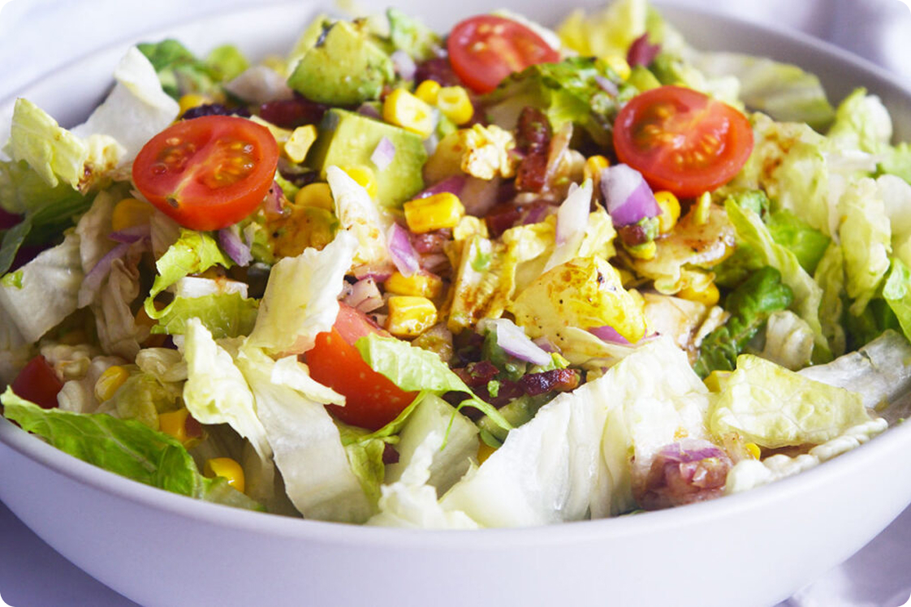

Strawberry Spinach Salad

This Strawberry Spinach Salad is fresh and simple and truly elevates the classic summer salad with seasonal strawberries, fresh spinach, juicy sliced strawberries, crunchy red onions, and crunchy walnuts or almonds, all lightly dressed with balsamic glaze and olive oil.